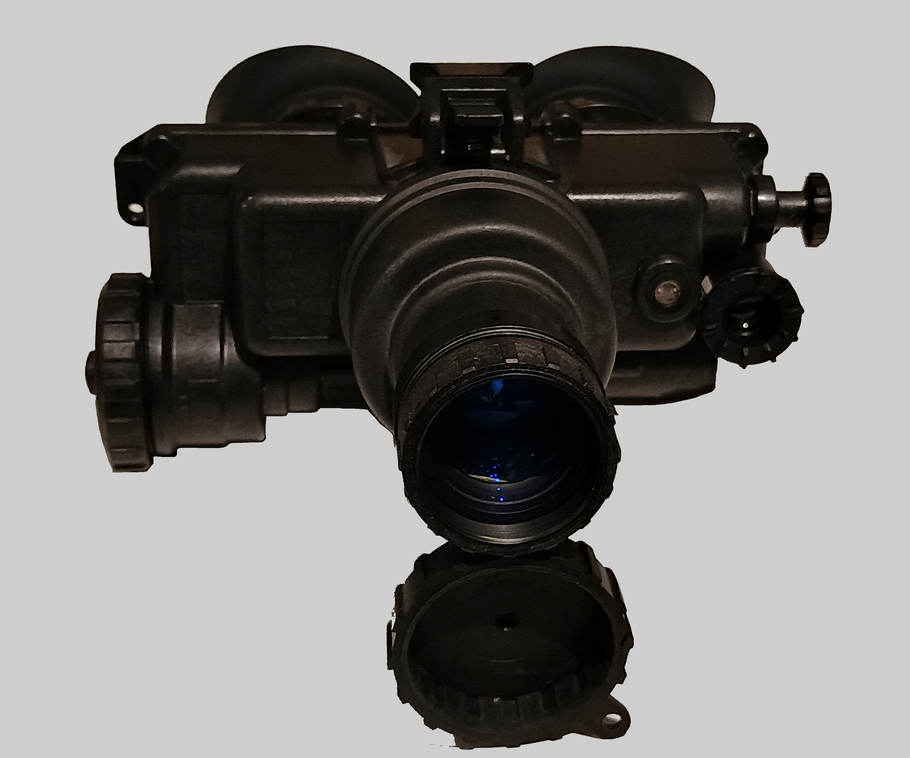

AN/PVS-7B/D

The PVS-7B/D is an all time classic night vision goggle from the USA.
Do not let the 7's bi-ocular nature fool you, this is a serious piece of kit. When set up correctly, the viewable area is nearly identical to that of a binocular device, resulting in a more comfortable viewing experience than a monocular.
With used G3 pvs7s often costing far less than the 14, it's a major advantage. Servicing is incredibly easy, no tools are needed to remove the intensifier tube for cleaning.
Unlike any pvs14 on the market, you can attach a spotlight lens to the IR illuminator, making it useful for more than just reading maps...
03/05/2025